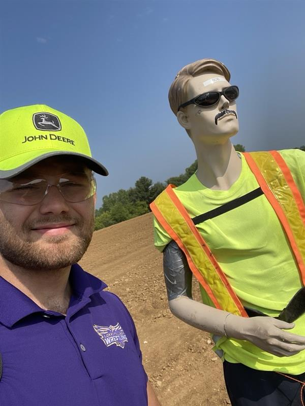

Lessons Learned
---
The title of this project (or a series of projects) is fancy verbage
for "wrote, executed, and reviewed test plans while trying to run stuff over with giant
machines" which was A LOT of fun. If all things went right I would be halted to a stop before
hitting the poor unsuspecting mannequin.
This was one of the main machines I got to try to run stuff over with!

...and this was said unsuspecting mannequin.
While I enjoyed the actual testing of software, a lot of the job was looking at the bits and verifying the correct ones would flip when doing specific things. This got really confusing a couple times when trying to remember if I wrote the test in big or little-endian which brings us to my first lesson while doing this: details matter.
In 8th grade, when I was thinking that it was silly we were writing detailed tests for simple procedures, I never would have thought that that would be a large part of what I did for a job, but as it turns out I really enjoy it. There was a bit of a learning curve when starting to write test plans but I quickly learned that just because I knew what something meant doesn't mean others will too, it became a game to see how conscise and detailed I could make a test step. This is also where "ensuring" and "verifying" began to mean different things to me. The time I spent writing test plans led me to long for something more than what Excel could give me (mainly being able to "ctrl+left" to traverse sentences in a cell) and so I began developing my first tool at Deere.
These projects were also the purpose of most of the meetings I was involved in. We had practiced a Scrum-like framework which at first was a lot to take in, but after a few google searches and a couple sprints I enjoyed the process.